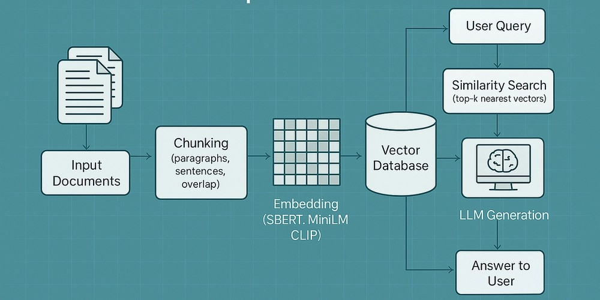

Portfolio
SmartDox AI - Intelligent Document Q&A System
SmartDox AI is an intelligent document question-answering system designed to help users interact with PDF documents more efficiently. The web interface allows users to upload PDF files and ask questions related to the document content.
The system uses text embedding techniques to convert document content into vector representations. These vectors are then stored and used to retrieve relevant information when users ask questions.
By applying the Retrieval-Augmented Generation (RAG) architecture combined with the Qwen 2.5.7 language model, which supports Vietnamese effectively, the system can generate accurate answers based on the uploaded document.

The main objective of this project is to build an AI-powered system capable of understanding document content and providing reliable answers to user queries related to that document.